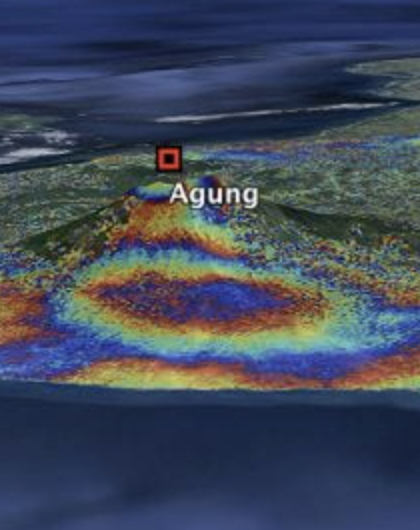

About & Vision
We are the Bristol Centre for Artificial Intelligence (AI) and Earth Observation (EO), a multidisciplinary research group spanning the Faculty of Science and Engineering at the University of Bristol. We are the Bristol Centre for Artificial Intelligence (AI) and Earth Observation (EO), a multidisciplinary research group spanning the Faculty of Science and Engineering at the University of Bristol. We are the Bristol Centre for Artificial Intelligence (AI) and Earth Observation (EO), a multidisciplinary research group spanning the Faculty of Science and Engineering at the University of Bristol. We are the Bristol Centre for Artificial Intelligence (AI) and Earth Observation (EO), a multidisciplinary research group spanning the Faculty of Science and Engineering at the University of Bristol.
